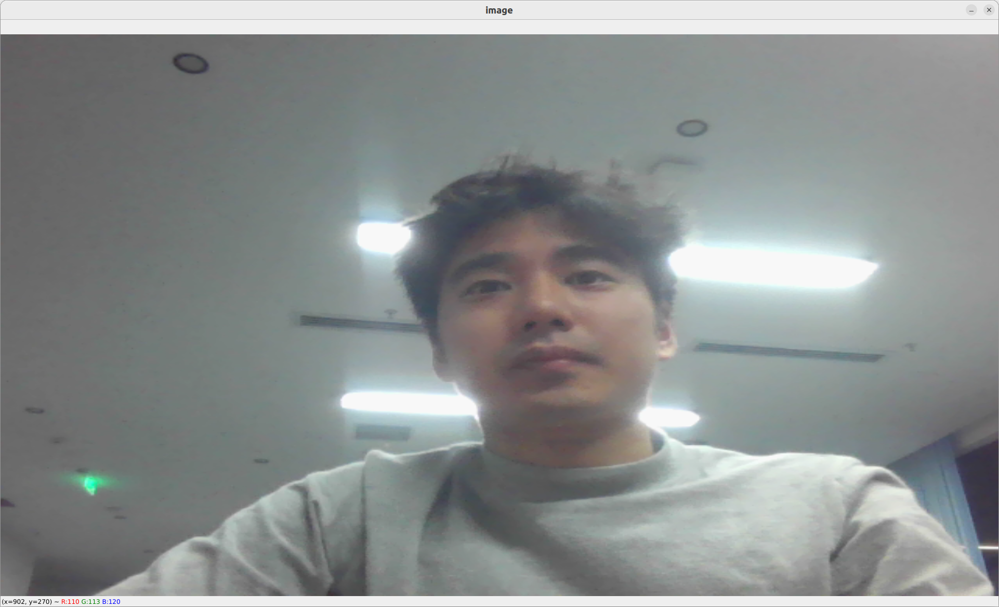
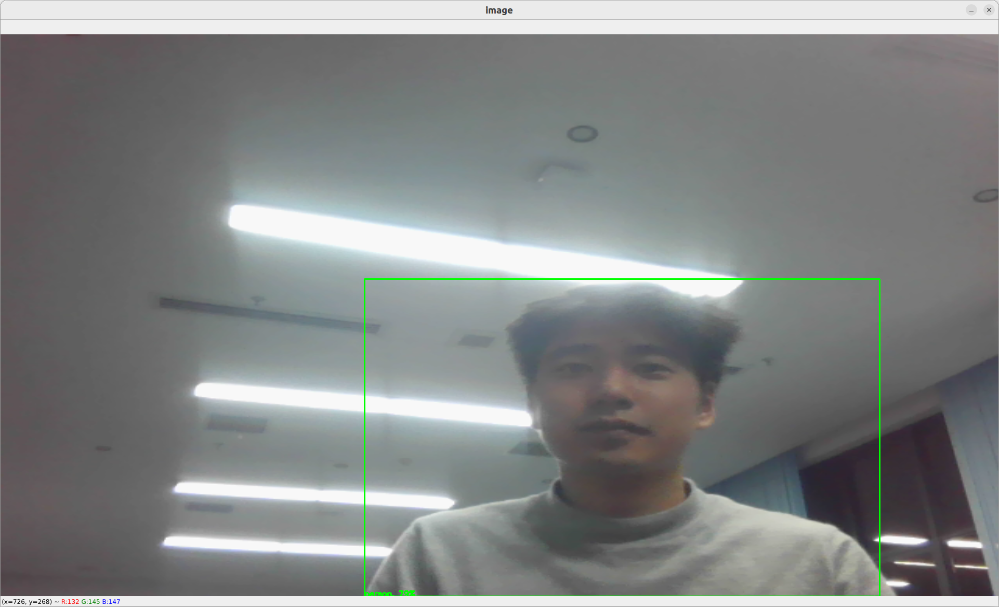
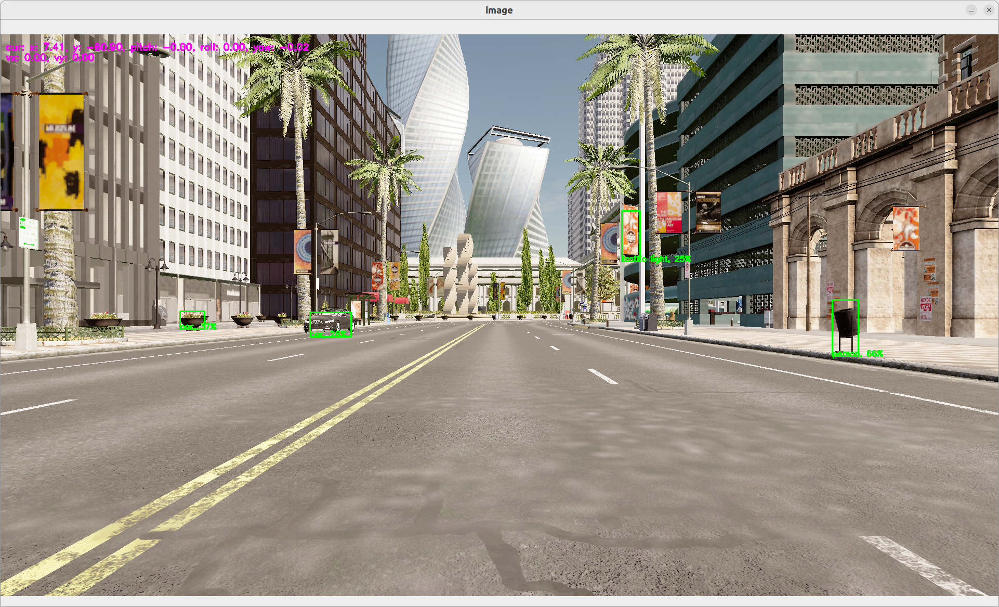
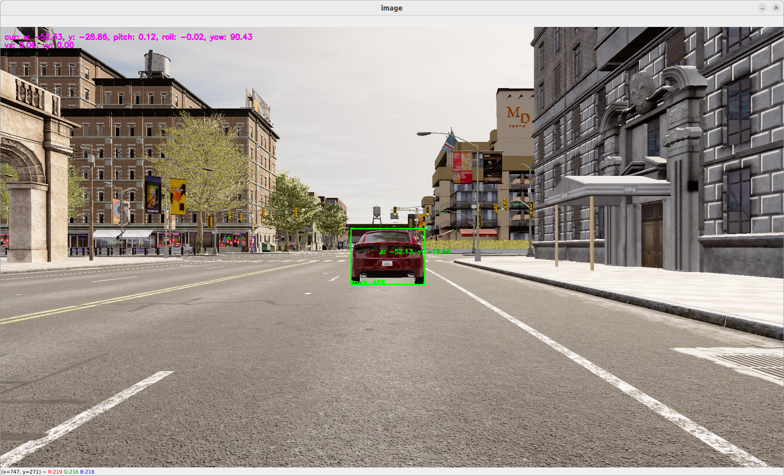
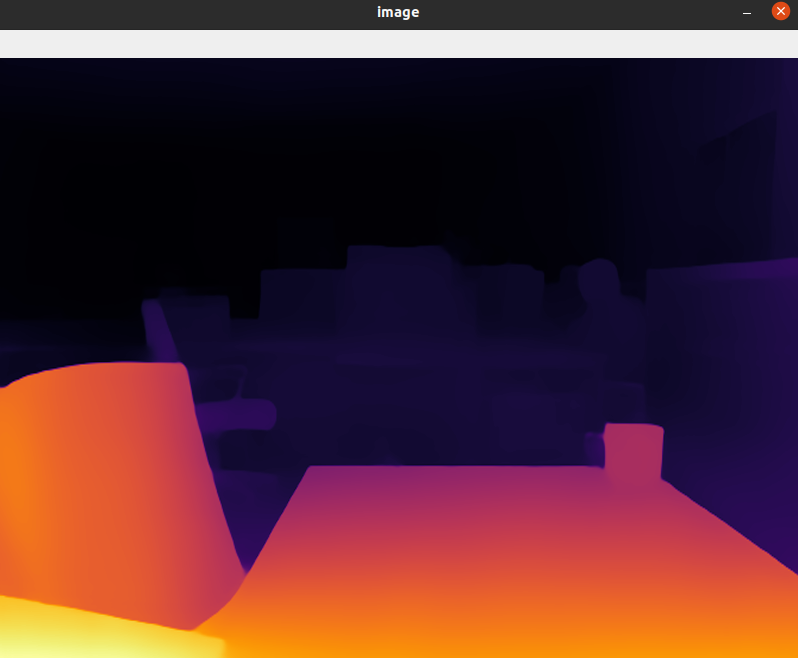

dora-drives is a set of operators you can use with dora to create an autonomous driving vehicle.
You can test the operators on real webcam or within Carla.
This project is in early development, and many features have yet to be implemented with breaking changes. Please don't take for granted the current design.
Documentation
The documentation can be found here: dora-rs.github.io/dora-drives
You will be able to get started using the installation section.
Operators:
Point cloud registration


Object dectection


- Perfect detection on Carla Simulator
Traffic sign recognition
Lane detection


Drivable Area detection

Multiple Object tracking(MOT)
strong sort


Motion Planning

Path Tracking
- Proportional Integral Derivative controller (PID)
Future operators:
⚖️ LICENSE
This project is licensed under Apache-2.0. Check out NOTICE.md for more information.
Installation
Hardware requirements
- NVIDIA GPU with CUDA
From Docker Hub
Environments
| Software | Version | Installation Guide |
|---|---|---|
| nvidia-docker | 20.10.18 | Installation Guide |
To start the docker container:
docker pull haixuantao/dora-drives
./scripts/launch.sh -s -g tutorials/carla_full.yaml
This docker image has been built with my setup and it might not work on all machines. In case it doesn't work. Please check the following
From Source.
Building Docker From Source
Environments
| Software | Version | Installation Guide |
|---|---|---|
| nvidia-docker | 20.10.18 | nvidia-docker |
| Linux | Ubuntu 20.04.5 LTS |
For linux, run:
git clone git@github.com:dora-rs/dora-drives.git
cd dora-drives
./scripts/launch.sh -b -s -g tutorials/carla_full.yaml
This script has been built with my setup and you might need to install further dependencies that I have not listed, and additional configuration for cross-compiling on other OS.
If you're having build difficulties with CUDA. Check out :https://github.com/pytorch/extension-cpp/issues/71#issuecomment-1061880626 and make sure to have the exact same daemon. You will need to have
/etc/docker/daemon.jsonto be exactly:
{ "runtimes": { "nvidia": { "path": "nvidia-container-runtime", "runtimeArgs": [] } }, "default-runtime": "nvidia" }And restart:
sudo systemctl restart docker
Using dora-drives without Docker
| Software | Version Tested | Installation Guide |
|---|---|---|
| Linux | Ubuntu 20.04.5 LTS | |
| Miniconda | 22.11.1 | Check the Dockerfile |
| Pytorch | 1.11 | Installation below |
| Carla | Carla Leaderboard | Installation below in scripts/install.sh. Version: Leaderboard Version |
| NVIDIA Driver | 515.86.01 | |
| CUDA | 11.7 | |
| dora-rs | 0.2.0 | Installation below |
Environments
Installation
git clone git@github.com:dora-rs/dora-drives.git
export DORA_DEP_HOME=<PATH TO A PARENT FOLDER> # Ex: $HOME/Documents
export DORA_DEP_HOME=$HOME/Documents
export CARLA_HOME=$DORA_DEP_HOME/dependencies/CARLA_0.9.13
export PYLOT_HOME=$DORA_DEP_HOME
export PYTHONPATH=$PYTHONPATH:$DORA_DEP_HOME/dependencies:$DORA_DEP_HOME/dependencies/CARLA_0.9.13/PythonAPI/carla:$DORA_DEP_HOME/dependencies/Carsmos/simulate_py37
## Add missing linux dependencies
sudo apt-get -y update
sudo apt-get -y install apt-utils git curl clang wget
sudo apt-get install -y cmake unzip libpng-dev libgeos-dev python3-opencv
sudo apt-get -y --fix-missing update && sudo apt-get install --fix-missing -y libcudnn8 ssh libqt5core5a libeigen3-dev cmake qtbase5-dev libpng16-16 libtiff5 python3-tk libgeos-dev vim build-essential libopenblas-dev libssl-dev
## Installing dependencies
conda create -n dora3.7 python=3.7 -y
conda activate dora3.7
conda install pytorch=1.11.0 torchvision=0.12.0 cudatoolkit=11.3 -c pytorch -y
pip install --upgrade pip
pip install -r install_requirements.txt
pip install -r requirements.txt
chmod +x ./scripts/*
./scripts/install.sh
## Installing Carla
cd $DORA_DEP_HOME/dependencies/
wget https://carla-releases.s3.eu-west-3.amazonaws.com/Linux/CARLA_0.9.13.tar.gz
tar -xvf CARLA_0.9.13.tar.gz
rm CARLA_0.9.13.tar.gz
## Installing dora
sudo wget https://github.com/dora-rs/dora/releases/download/v0.2.0/dora-v0.2.0-x86_64-Linux.zip && sudo unzip dora-v0.2.0-x86_64-Linux.zip -d ~/.local/bin
Uninstalling package
conda remove --name dora3.7 --all
sudo rm -rf $DORA_DEP_HOME/dependencies
rm ~/.local/bin/dora*
```Getting started
This first tutorial enables to stream a video stream from a webcam from scratch.
- Fork this project
# Go to: https://github.com/dora-rs/dora-drives/fork
#
# Then clone your fork:
git clone git@github.com:<USERNAME>/dora-drives.git
# Add dora as a remote source to be able to fetch updates.
git remote add dora git@github.com:dora-rs/dora-drives.git
You will find the following folder structure
.
├── graphs # Example graph
├── operators # Exemple operators
├── carla # Carla nodes and operators that requires the CARLA API
├── ros # ROS based operators to bridge between ROS and dora
├── docs # This docs folder. You can replace the src file to keep your operator documented.
├── ... # utils folder
- To be able to run dora, you will need to start
dora-coordinatoranddora-daemon:
# Start the `dora-coordinator` and `dora-daemon`.
dora up
- To start a dataflow, you just need to pass a dataflow path.
conda activate dora3.7
dora start graphs/tutorials/webcam.yaml --attach --hot-reload --name webcam
--attach: enables you to wait for the dataflow to finish before returning.
--hot-reload: enables you to modify Python Operator while the dataflow is running.
--name: enables you to name a dataflow that might be simpler to use than the UUID.
- You should see a small webcam open up!
Make sure to have a webcam and cv2 install via:
pip install opencv-python

-
To stop your dataflow, you can use ctrl+c
-
That's it! You know the basic of dora!
Making the video stream intelligent
Let's add a yolov5 object detection operator that has already been written for us in ./operators/yolov5_op.py. This will help us detect object as bounding boxes within the webcam stream.
# operators/yolov5_op.py
"""
# Yolov5 operator
`Yolov5` object detection operator generates bounding boxes on images where it detects object.
More info here: [https://github.com/ultralytics/yolov5](https://github.com/ultralytics/yolov5)
`Yolov5` has not been finetuned on the simulation and is directly importing weight from Pytorch Hub.
In case you want to run `yolov5` without internet you can clone [https://github.com/ultralytics/yolov5](https://github.com/ultralytics/yolov5) and download the weights you want to use from [the release page](https://github.com/ultralytics/yolov5/releases/tag/v7.0) and then specify within the yaml graph the two environments variables:
- `YOLOV5_PATH: YOUR/PATH`
- `YOLOV5_WEIGHT_PATH: YOUR/WEIGHT/PATH`
You can also choose to allocate the model in GPU using the environment variable:
- `PYTORCH_DEVICE: cuda # or cpu`
## Inputs
- image as 1920x1080xBGR array.
## Outputs
- Bounding box coordinates as well as the confidence and class label as output.
## Graph Description
```yaml
- id: yolov5
operator:
outputs:
- bbox
inputs:
image: webcam/image
python: ../../operators/yolov5_op.py
Graph Visualisation
flowchart TB oasis_agent subgraph yolov5 yolov5/op[op] end subgraph obstacle_location_op obstacle_location_op/op[op] end oasis_agent -- image --> yolov5/op yolov5/op -- bbox as obstacles_bbox --> obstacle_location_op/op
"""
import os from typing import Callable
import numpy as np import pyarrow as pa import torch from dora import DoraStatus
pa.array([]) # See: https://github.com/apache/arrow/issues/34994 IMAGE_WIDTH = 1920 IMAGE_HEIGHT = 1080 DEVICE = os.environ.get("PYTORCH_DEVICE") or "cpu" YOLOV5_PATH = os.environ.get("YOLOV5_PATH") YOLOV5_WEIGHT_PATH = os.environ.get("YOLOV5_WEIGHT_PATH")
class Operator:
"""
Send bbox found by YOLOv5 on given image
"""
def __init__(self):
if YOLOV5_PATH is None:
# With internet
self.model = torch.hub.load(
"ultralytics/yolov5",
"yolov5n",
)
else:
# Without internet
#
# To install:
# cd $DORA_HOME_DEP/dependecies # Optional
# git clone https://github.com/ultralytics/yolov5.git
# rm yolov5/.git -rf
# Add YOLOV5_PATH and YOLOV5_WEIGHT_PATH in your YAML graph
self.model = torch.hub.load(
YOLOV5_PATH,
"custom",
path=YOLOV5_WEIGHT_PATH,
source="local",
)
self.model.to(torch.device(DEVICE))
self.model.eval()
def on_event(
self,
dora_event: dict,
send_output: Callable[[str, bytes], None],
) -> DoraStatus:
if dora_event["type"] == "INPUT":
return self.on_input(dora_event, send_output)
return DoraStatus.CONTINUE
def on_input(
self,
dora_input: dict,
send_output: Callable[[str, bytes], None],
) -> DoraStatus:
"""
Handle image
Args:
dora_input["id"] (str): Id of the input declared in the yaml configuration
dora_input["value"] (arrow.array (UInt8)): Bytes message of the input
send_output (Callable[[str, bytes]]): Function enabling sending output back to dora.
"""
if dora_input["id"] == "image":
frame = (
dora_input["value"]
.to_numpy()
.reshape((IMAGE_HEIGHT, IMAGE_WIDTH, 4))
)
frame = frame[:, :, :3]
results = self.model(frame) # includes NMS
arrays = np.array(results.xyxy[0].cpu())[
:, [0, 2, 1, 3, 4, 5]
] # xyxy -> xxyy
arrays[:, 4] *= 100
arrays = arrays.astype(np.int32)
arrays = pa.array(arrays.ravel().view(np.uint8))
send_output("bbox", arrays, dora_input["metadata"])
return DoraStatus.CONTINUE
> Operators are composed of:
>
> `__init__` methods that help create the object.
>
> `on_event` methods that is called when an event is received.
> There is currently 4 event types:
> - `STOP`: meaning that the operator was signalled to stop.
> - `INPUT`: meannig that an input was received.
> - You can use `dora_event['id']`, to get the id.
> - You can use `dora_event['data']`, to get the data.
> - You can use `dora_event['meatadata']`, to get the metadata.
> - `INPUT_CLOSED`: meannig that an input source was closed. This could be useful if the input is critical for the well behaviour of the operator.
> - `ERROR`: meaning that error message was received.
> - `UNKNOWN`: meaning that an unknown message was received.
>
> We have encapsulated `input` event in a `on_input` method but this is not required.
To add an operator within the dataflow. You need to explicit what the input and output are. You can reference node by their ids:
```yaml
# graphs/tutorials/webcam_yolov5.yaml
nodes:
- id: webcam
operator:
python: ../../operators/webcam_op.py
inputs:
tick: dora/timer/millis/100
outputs:
- image
env:
DEVICE_INDEX: 0
- id: yolov5
operator:
outputs:
- bbox
inputs:
image: webcam/image
python: ../../operators/yolov5_op.py
- id: plot
operator:
python: ../../operators/plot.py
inputs:
image: webcam/image
obstacles_bbox: yolov5/bbox
In this case, we have connected the webcam/image output to the image input of yolov5. yolov5/bbox is then connected to the plot/obstacles_bbox.
Inputs are prefixed by the node name to be able to separate name conflicts.
To run:
dora up
dora start graphs/tutorials/webcam_yolov5.yaml --attach

For more information on
yolov5, go on ouryolov5detail page
Full perception
Let's add all dora-drives operators that works on image frame, which are:
yolov5an object detector.strong_sorta multi-object tracker.yolopa lane and drivable area detector.traffic_signa traffic sign detector.
the graph will look as follows:
# graphs/tutorials/webcam_full.yaml
nodes:
- id: webcam
operator:
python: ../../operators/webcam_op.py
inputs:
tick: dora/timer/millis/100
outputs:
- image
env:
DEVICE_INDEX: 0
- id: yolov5
operator:
outputs:
- bbox
inputs:
image: webcam/image
python: ../../operators/yolov5_op.py
# - id: yolop
# operator:
# outputs:
# - lanes
# - drivable_area
# inputs:
# image: webcam/image
# python: ../../operators/yolop_op.py
## Commented out as it takes a lot of GPU memory.
#- id: traffic_sign
#operator:
#outputs:
#- bbox
#inputs:
#image: webcam/image
#python: operators/traffic_sign_op.py
- id: strong_sort
operator:
outputs:
- obstacles_id
inputs:
image: webcam/image
obstacles_bbox: yolov5/bbox
python: ../../operators/strong_sort_op.py
- id: plot
operator:
python: ../../operators/plot.py
inputs:
image: webcam/image
obstacles_bbox: yolov5/bbox
# traffic_sign_bbox: traffic_sign/bbox
# lanes: yolop/lanes
# drivable_area: yolop/drivable_area
obstacles_id: strong_sort/obstacles_id
dora start graphs/tutorials/webcam_full.yaml --attach
I'm currently having issue running all nodes behind the GFW. You can look into it for inspiration.
Nice 🥳 As you can see, the value of dora comes from the idea that you can compose different algorithm really quickly.
Carla simulator
Let's try to use a car simulator to not only do perception but also control.
Carla Setup
In the rest of the tutorial, we will accept that you have a carla simulator running at localhost:2000 the default carla configuration.
To start a simulator make sure you have carla installed. You can check the installation page if you not sure if it's installed.
You can also a docker version or any other method provided by Carla
In case you have used the installation script. You should be able to run a carla simulator using
./scripts/run_simulator.sh
You can define the VULKAN interface you want to use, using the env variable
VK_ICD_FILENAMES.Ex for NVIDIA:
export VK_ICD_FILENAMES="/usr/share/vulkan/icd.d/nvidia_icd.json"
If you're using the OASIS platflorm, follow the OASIS platform to start and run your dataflow.
Switching from the
We can then switch from the webcam to the simulator in our graph.
# graphs/oasis/oasis_agent_gps.yaml
nodes:
- id: oasis_agent
custom:
inputs:
tick: dora/timer/millis/400
outputs:
- position
- speed
- image
- objective_waypoints
- lidar_pc
- opendrive
source: shell
# With Carla_source_node
args: python3 ../../carla/carla_source_node.py
#
# Or with the OASIS AGENT
#
# args: >
# python3 $SIMULATE --output
# --oasJson --criteriaConfig $CRITERIA
# --openscenario $XOSC
# --agent $TEAM_AGENT
# --agentConfig $TEAM_AGENT_CONF
# --destination $DESTINATION
- id: yolov5
operator:
outputs:
- bbox
inputs:
image: oasis_agent/image
python: ../../operators/yolov5_op.py
env:
# CUDA_VISIBLE_DEVICES: ""
# PYTORCH_DEVICE: cuda # Uncomment if you want to use CUDA
# YOLOV5_PATH: # /PATH/TO/YOLOv5 Ex: $DORA_DEP_HOME/dependencies/yolov5
# YOLOV5_WEIGHT_PATH: : # /PATH/TO/YOLOv5 Ex: $ORA_DEP_HOME/dependencies/yolov5/yolov5n.pt
- id: plot
operator:
python: ../../operators/plot.py
inputs:
image: oasis_agent/image
obstacles_bbox: yolov5/bbox
position: oasis_agent/position
To run:
dora up
dora start graphs/oasis/oasis_agent_yolov5.yaml --attach
You should see a window showing the view from a camera within the carla simulator. On this camera stream, you should see object detection happenning.
You can ctrl+c to kill your running dataflow.

This very first step is done to show you how to connect carla simulator with dora. It does not provide any control to move the car.
Obstacle location
The carla simulator gives us the possibility to work with many more sensors than just a camera feed. We can emulate an LIDAR, IMU, Depth sensor, Segmentation sensor...
Let's use the LIDAR sensor to locate the exact position of the obstacle that has been located by yolov5.
Details on lidar point cloud: The lidar point cloud is an array of
x, y, z, intensitypoints.The coordinates are based on Unreal Engine coordinate system which is:
- z is up
- x is forward
- y is right
More info: https://www.techarthub.com/a-practical-guide-to-unreal-engine-4s-coordinate-system/
and within carla documentation: https://carla.readthedocs.io/en/latest/ref_sensors/#lidar-sensor
You can also check velodyne reference: https://github.com/ros-drivers/velodyne/blob/master/velodyne_pcl/README.md
To get the obstacle location, we are going to compute the angle of every points in the point cloud. We can then map the angle of each pixel of the bounding box to a real point and therefore infere its location. We then transform the coordinate from the relative lIDAR coordinate system into a global coordinate system by adding the current position of the LIDAR sensor. The code can be found here: operators/obstacle_location_op.py.
To use the obstacle location, just add it to the graph with:
# graphs/oasis/oasis_agent_obstacle_location.yaml
nodes:
- id: oasis_agent
custom:
inputs:
tick: dora/timer/millis/400
outputs:
- position
- speed
- image
- objective_waypoints
- lidar_pc
- opendrive
source: shell
# With Carla_source_node
args: python3 ../../carla/carla_source_node.py
#
# Or with the OASIS AGENT
#
# args: >
# python3 $SIMULATE --output
# --oasJson --criteriaConfig $CRITERIA
# --openscenario $XOSC
# --agent $TEAM_AGENT
# --agentConfig $TEAM_AGENT_CONF
# --destination $DESTINATION
- id: yolov5
operator:
outputs:
- bbox
inputs:
image: oasis_agent/image
python: ../../operators/yolov5_op.py
- id: obstacle_location_op
operator:
outputs:
- obstacles
inputs:
lidar_pc: oasis_agent/lidar_pc
obstacles_bbox: yolov5/bbox
position: oasis_agent/position
python: ../../operators/obstacle_location_op.py
- id: plot
operator:
python: ../../operators/plot.py
inputs:
image: oasis_agent/image
obstacles_bbox: yolov5/bbox
position: oasis_agent/position
obstacles: obstacle_location_op/obstacles
To run:
dora up
dora start graphs/oasis/oasis_agent_obstacle_location.yaml --attach
You should be able to see a dot within the bounding box representing the estimated location in global coordinate of the obstacle.

For more information on
obstacle_location, go on ourobstacle_locationdetail page
Planning
To make the car drive itself we first need to plan the way we want to go.
GPS
To do this, we're going to use gps to trace the route from our current location to our target location.
Carla GlobalRoutePlanner enables us to get the route from two points given a map. We have encapsulated this function within operators/carla_gps_op.py.
The following operator will compute the route from the current position to the objective_waypoints given an opendrive map.
- id: carla_gps_op
operator:
python: ../../carla/carla_gps_op.py
outputs:
- gps_waypoints
inputs:
opendrive: oasis_agent/opendrive
objective_waypoints: oasis_agent/objective_waypoints
position: oasis_agent/position
The waypoints are defined as a an array of
x, y, speedasfloat32waypoints, with global coordinates.
For more information on
gps, go on ourgpsdetail page
Planner
The GPS waypoints does not take into account obstacles. To avoid collision, we can implement a motion planner that can avoid obstacles.
We're going to reuse a model called fot (Frenet Optimal Trajectory) as a black box, that take as input a starting location and a goal waypoints, as well as a list of obstacles and outputs the best waypoints to follow.
- id: fot_op
operator:
python: operators/fot_op.py
outputs:
- waypoints
inputs:
position: oasis_agent/position
obstacles: obstacle_location_op/obstacles
gps_waypoints: carla_gps_op/gps_waypoints
To test both functionallities:
dora up
dora start graphs/oasis/oasis_agent_planning.yaml --attach

For more information on
fot, go on ourfotdetail page
Control
PID Controller
To translate our waypoints to throttle, steering and brake control, we're using a Proportional Integral Derivative (PID) controller that is able to adjust the throttle, steering and breaking according to the car position and speed by comparing it to the desired waypoints. The code can be found in operator/pid_control_op.py.
For more information on
pid, go on ourpiddetail page
Control
The actual command being applied to the car is controlled within the oasis_agent.
Fully looped graph
We have now all our starter kit node. They will look like this:
# graphs/oasis/oasis_agent.yaml
nodes:
- id: oasis_agent
custom:
inputs:
control: pid_control_op/control
tick: dora/timer/millis/400
outputs:
- position
- speed
- image
- objective_waypoints
- lidar_pc
- opendrive
source: shell
# args: >
# python3 $SIMULATE --output
# --oasJson --criteriaConfig $CRITERIA
# --openscenario $XOSC
# --agent $TEAM_AGENT
# --agentConfig $TEAM_AGENT_CONF
# --destination $DESTINATION
#
# or for Carla Standalone:
#
args: python3 ../../carla/carla_source_node.py
- id: carla_gps_op
operator:
python: ../../carla/carla_gps_op.py
outputs:
- gps_waypoints
inputs:
opendrive: oasis_agent/opendrive
objective_waypoints: oasis_agent/objective_waypoints
position: oasis_agent/position
- id: yolov5
operator:
outputs:
- bbox
inputs:
image: oasis_agent/image
python: ../../operators/yolov5_op.py
env:
# CUDA_VISIBLE_DEVICES: ""
PYTORCH_DEVICE: cuda
- id: obstacle_location_op
operator:
outputs:
- obstacles
inputs:
lidar_pc: oasis_agent/lidar_pc
obstacles_bbox: yolov5/bbox
position: oasis_agent/position
python: ../../operators/obstacle_location_op.py
- id: fot_op
operator:
python: ../../operators/fot_op.py
outputs:
- waypoints
inputs:
position: oasis_agent/position
speed: oasis_agent/speed
obstacles: obstacle_location_op/obstacles
gps_waypoints: carla_gps_op/gps_waypoints
- id: pid_control_op
operator:
python: ../../operators/pid_control_op.py
outputs:
- control
inputs:
position: oasis_agent/position
speed: oasis_agent/speed
waypoints: fot_op/waypoints
- id: plot
operator:
python: ../../operators/plot.py
inputs:
image: oasis_agent/image
obstacles_bbox: yolov5/bbox
obstacles: obstacle_location_op/obstacles
gps_waypoints: carla_gps_op/gps_waypoints
position: oasis_agent/position
waypoints: fot_op/waypoints
control: pid_control_op/control
To run a running car example:
dora up
dora start graphs/oasis/oasis_agent.yaml --attach
😎 We now have a working autonomous car!
You might have noticed that improvement can be done in many place.
In case you need inspiration, we advise you check:
operators/yolop_op.pythat enables you to detect lanes. It can be passed to the obstacle location to get the 3D position of the lanes. Those 3D position of lanes can then be passed tofotto plan by taking into account lanes on the floor.operators/strong_sort.pythat enables tracking 2D bounding box through times. This can be useul if you want to avoid moving vehicles.opertators/traffic_sign.pythat is self-trained traffic light detection based on yolov7 and tt100k. THis can be useful to avoid traffic light.
GPS operator
The GPS Operator take a map a current position and wished waypoints and compute the best route to go to the wished waypoint.
It does by using carla.GlobalRoutePlanner. This modules takes an
opendrive map as an input and can compute most efficient route between
two points.
- The caching of result such that we don't compute it every single time. The computation of route is really costly.
# Used cached waypoints but start at closest point.
if len(self.waypoints) != 0:
(index, _) = closest_vertex(
self.waypoints,
np.array([self.position[:2]]),
)
self.waypoints = self.waypoints[
index : index + NUM_WAYPOINTS_AHEAD
]
self.target_speeds = self.target_speeds[
index : index + NUM_WAYPOINTS_AHEAD
]
- The computation of the gps waypoints happens here:
# Compute the waypoints
waypoints = self.hd_map.compute_waypoints(
[
x,
y,
self._goal_location[2],
],
self._goal_location,
Sometimes the computation might put the position on the wrong side of the road. I have put a failsafe mecanism, but that might have other consequences. You can try to revisit this part. To increase the precision of the map, you can change the parameters in
_hd_map.py:self._grp = GlobalRoutePlanner( self._map, 1.0 ) # Distance between waypoints
Graph Description
- id: carla_gps_op
operator:
python: ../../carla/carla_gps_op.py
outputs:
- gps_waypoints
inputs:
opendrive: oasis_agent/opendrive
objective_waypoints: oasis_agent/objective_waypoints
position: oasis_agent/position
Graph Viz
flowchart TB oasis_agent subgraph fot_op fot_op/op[op] end subgraph carla_gps_op carla_gps_op/op[op] end oasis_agent -- objective_waypoints --> carla_gps_op/op oasis_agent -- opendrive --> carla_gps_op/op oasis_agent -- position --> carla_gps_op/op carla_gps_op/op -- gps_waypoints --> fot_op/op
Yolov5 operator
Yolov5 object detection operator generates bounding boxes on images where it detects object.
More info here: https://github.com/ultralytics/yolov5
Yolov5 has not been finetuned on the simulation and is directly importing weight from Pytorch Hub.
In case you want to run yolov5 without internet you can clone https://github.com/ultralytics/yolov5 and download the weights you want to use from the release page and then specify within the yaml graph the two environments variables:
YOLOV5_PATH: YOUR/PATHYOLOV5_WEIGHT_PATH: YOUR/WEIGHT/PATH
You can also choose to allocate the model in GPU using the environment variable:
PYTORCH_DEVICE: cuda # or cpu
The image size must be specified in order to work. By default it is 1920x1080xBGR.
Inputs
- image as1920x1080xBGR array.
Outputs
- Bounding box coordinates as well as the confidence and class label as output.
Graph Description
- id: yolov5
operator:
outputs:
- bbox
inputs:
image: oasis_agent/image
python: ../../operators/yolov5_op.py
env:
PYTORCH_DEVICE: cuda
YOLOV5_PATH: /home/dora/workspace/simulate/team_code/dependencies/yolov5
YOLOV5_WEIGHT_PATH: /home/dora/workspace/simulate/team_code/dependencies/yolov5/yolov5n.pt
Graph Viz
flowchart TB oasis_agent subgraph yolov5 yolov5/op[op] end subgraph obstacle_location_op obstacle_location_op/op[op] end oasis_agent -- image --> yolov5/op yolov5/op -- bbox as obstacles_bbox --> obstacle_location_op/op
Obstacle location operator
The obstacle location operator match bounding box with depth frame to find an approximative position of obstacles.
There is two logic within it:
- One is for the ground dot for lane detection.
- One is for bounding box obstacle localisation.
Both logic are based on he computation of the projection in 2D space of the lidar 3D point and then reusing the index to get the 3D position.
- In the case of ground dot detection, the approximation is based on a knnr, as we might not have enough data on the floor.
- In the case of bounding box, we use first quantile closest point within the bounding box to estimate the distance. We use the first quantile closest point to remove the noise.
The mecanism to project the lidar point cloud into a 2D is also used in the plot.py operator. You can use the input lidar_pc within it to help you debug.
Inputs
- 2D Obstacles bounding box.
Outputs
- 3D position of obstacles as dot.
Graph Description
- id: obstacle_location_op
operator:
outputs:
- obstacles
inputs:
lidar_pc: oasis_agent/lidar_pc
obstacles_bbox: yolov5/bbox
position: oasis_agent/position
python: ../../operators/obstacle_location_op.py
Graph Viz
flowchart TB oasis_agent subgraph yolov5 yolov5/op[op] end subgraph fot_op fot_op/op[op] end subgraph obstacle_location_op obstacle_location_op/op[op] end oasis_agent -- lidar_pc --> obstacle_location_op/op yolov5/op -- bbox as obstacles_bbox --> obstacle_location_op/op oasis_agent -- position --> obstacle_location_op/op obstacle_location_op/op -- obstacles --> fot_op/op
Depth estimation example
MiDaS models for computing relative depth from a single image.
MiDaS computes relative inverse depth from a single image. The repository provides multiple models that cover different use cases ranging from a small, high-speed model to a very large model that provide the highest accuracy. The models have been trained on 10 distinct datasets using multi-objective optimization to ensure high quality on a wide range of inputs. Let's add all
dora-drivesoperators that works on image frame, which are:
webcamplug in a camera.midas_opcomputing relative depth from a single image.plottake almost all output from the graph and plot it on the camera frame.
the graph will look as follows:
# graphs/tutorials/webcam_midas_frame.yaml
nodes:
- id: webcam
operator:
python: ../../operators/webcam_op.py
inputs:
tick: dora/timer/millis/100
outputs:
- image
env:
DEVICE_INDEX: 0
- id: midas_op
operator:
outputs:
- depth_frame
inputs:
image: webcam/image
python: ../../operators/midas_op.py
env:
PYTORCH_DEVICE: "cuda"
MIDAS_PATH: $DORA_DEP_HOME/dependencies/MiDaS/
MIDAS_WEIGHT_PATH: $DORA_DEP_HOME/dependencies/MiDaS/weights/midas_v21_small_256.pt
MODEL_TYPE: "MiDaS_small"
MODEL_NAME: "MiDaS_small"
- id: plot
operator:
python: ../../operators/plot.py
inputs:
image: midas_op/depth_frame
MiDaS source code:
You need to link the network to load the algorithm model. If you are in mainland China, you may need a network proxy to speed up the download.
optional: Of course, you can also download it in advance and place it under the specified directory. The operation steps are as follows:
cd $DORA_DEP_HOME/dependencies/
git clone git@github.com:isl-org/MiDaS.git
cd MiDaS/weights
# If you don't want to add manual download, the program will also automatically download the model file
wget https://github.com/isl-org/MiDaS/releases/download/v2_1/midas_v21_small_256.pt
cp midas_v21_small_256.pt $HOME/.cache/torch/hub/checkpoints/
At the same time, open the following comments in the dataflow configuration file # graphs/tutorials/webcam_midas_frame.yaml
MIDAS_PATH: $DORA_DEP_HOME/dependencies/MiDaS/
MIDAS_WEIGHT_PATH: $DORA_DEP_HOME/dependencies/MiDaS/weights/midas_v21_small_256.pt
MODEL_TYPE: "MiDaS_small"
MODEL_NAME: "MiDaS_small"
- model_type = "DPT_Large" # MiDaS v3 - Large (highest accuracy, slowest inference speed)
- model_type = "DPT_Hybrid" # MiDaS v3 - Hybrid (medium accuracy, medium inference speed)
- model_type = "MiDaS_small" # MiDaS v2.1 - Small (lowest accuracy, highest inference speed)
Custom configuration
-
Pick one or more models, You can find out more here.
-
Other descriptive information In this case, we have connected the
webcam/imageoutput to theimageinput of midas_op.midas_op/depth_frameis then connected to theplot/image. Inputs are prefixed by the node name to be able to separate name conflicts.
To run:
dora up
dora start graphs/tutorials/webcam_midas_frame.yaml --attach --hot-reload --name dpt_midas
Display as follows:

I'm currently having issue running all nodes behind the GFW. You can look into it for inspiration.
Nice 🥳 As you can see, the value of dora comes from the idea that you can compose different algorithm really quickly.
FOT operator
The Frenet Optimal Planner Operator is based on https://github.com/erdos-project/frenet_optimal_trajectory_planner/ and wrap the different elements obstacles, position, speed ... into a frenet consumable format.
FOT inputs are:
initial_conditions = {
"ps": 0,
"target_speed": # The target speed
"pos": # The x, y current position
"vel": # The vx, vy current speed
"wp": # [[x, y], ... n_waypoints ] desired waypoints
"obs": # [[min_x, min_y, max_x, max_y], ... ] obstacles on the way
}
There is also a set of hyperparameters that are described below.
As our obstacles are defined as 3D dot we need to transform those dot into [min_x, min_y, max_x, max_y] format. We do that within the get_obstacle_list function. This approximation is very basic and probably need to be revisited.
The output is either a successful trajectory that we can feed into PID. Or it is a failure in which case we send the current position as waypoint.
Graph Description
- id: fot_op
operator:
python: ../../operators/fot_op.py
outputs:
- waypoints
inputs:
position: oasis_agent/position
speed: oasis_agent/speed
obstacles: obstacle_location_op/obstacles
gps_waypoints: carla_gps_op/gps_waypoints
Graph Viz
flowchart TB oasis_agent subgraph carla_gps_op carla_gps_op/op[op] end subgraph fot_op fot_op/op[op] end subgraph obstacle_location_op obstacle_location_op/op[op] end subgraph pid_control_op pid_control_op/op[op] end carla_gps_op/op -- gps_waypoints --> fot_op/op obstacle_location_op/op -- obstacles --> fot_op/op oasis_agent -- position --> fot_op/op oasis_agent -- speed --> fot_op/op fot_op/op -- waypoints --> pid_control_op/op
Hyperparameter descriptions
initial_conditions (dict): dict containing the following items
ps (float): previous longitudinal position
target_speed (float): target speed [m/s]
pos (np.ndarray([float, float])): initial position in global coord
vel (np.ndarray([float, float])): initial velocity [m/s]
wp (np.ndarray([float, float])): list of global waypoints
obs (np.ndarray([float, float, float, float])): list of obstacles
as: [lower left x, lower left y, upper right x, upper right y]
hyperparameters (dict): a dict of optional hyperparameters
max_speed (float): maximum speed [m/s]
max_accel (float): maximum acceleration [m/s^2]
max_curvature (float): maximum curvature [1/m]
max_road_width_l (float): maximum road width to the left [m]
max_road_width_r (float): maximum road width to the right [m]
d_road_w (float): road width sampling discretization [m]
dt (float): time sampling discretization [s]
maxt (float): max prediction horizon [s]
mint (float): min prediction horizon [s]
d_t_s (float): target speed sampling discretization [m/s]
n_s_sample (float): sampling number of target speed
obstacle_clearance (float): obstacle radius [m]
kd (float): positional deviation cost
kv (float): velocity cost
ka (float): acceleration cost
kj (float): jerk cost
kt (float): time cost
ko (float): dist to obstacle cost
klat (float): lateral cost
klon (float): longitudinal cost
Returns:
result_x (np.ndarray(float)): x positions of fot, if it exists
result_y (np.ndarray(float)): y positions of fot, if it exists
speeds (np.ndarray(float)): speeds of fot, if it exists
ix (np.ndarray(float)): spline x of fot, if it exists
iy (np.ndarray(float)): spline y of fot, if it exists
iyaw (np.ndarray(float)): spline yaws of fot, if it exists
d (np.ndarray(float)): lateral offset of fot, if it exists
s (np.ndarray(float)): longitudinal offset of fot, if it exists
speeds_x (np.ndarray(float)): x speeds of fot, if it exists
speeds_y (np.ndarray(float)): y speeds of fot, if it exists
params (dict): next frenet coordinates, if they exist
costs (dict): costs of best frenet path, if it exists
success (bool): whether a fot was found or not
Ref: https://github.com/erdos-project/frenet_optimal_trajectory_planner/blob/master/FrenetOptimalTrajectory/fot_wrapper.py
PID Control operator
pid control operator computes the command that needs to be executed to follow the given waypoints.
It reacts to the car current speed and position in a way that accelerates or brake according to previous inputs.
Inputs
- waypoints coordinates to follow.
Outputs
- throttle, steering (rad) and braking.
Graph Description
- id: pid_control_op
operator:
python: ../../operators/pid_control_op.py
outputs:
- control
inputs:
position: oasis_agent/position
speed: oasis_agent/speed
waypoints: fot_op/waypoints
Graph Viz
flowchart TB oasis_agent subgraph fot_op fot_op/op[op] end subgraph pid_control_op pid_control_op/op[op] end oasis_agent -- position --> pid_control_op/op oasis_agent -- speed --> pid_control_op/op fot_op/op -- waypoints --> pid_control_op/op pid_control_op/op -- control --> oasis_agent
Hyperparameters consider changing
See: https://en.wikipedia.org/wiki/PID_controller
pid_p = 0.1
pid_d = 0.0
pid_i = 0.05
dt = 1.0 / 20
Example reaction:

Overview
flowchart TB
oasis_agent
subgraph carla_gps_op
carla_gps_op/op[op]
end
subgraph yolov5
yolov5/op[op]
end
subgraph obstacle_location_op
obstacle_location_op/op[op]
end
subgraph fot_op
fot_op/op[op]
end
subgraph pid_control_op
pid_control_op/op[op]
end
subgraph ___dora___ [dora]
subgraph ___timer_timer___ [timer]
dora/timer/secs/1[\secs/1/]
end
end
pid_control_op/op -- control --> oasis_agent
dora/timer/secs/1 -- tick --> oasis_agent
oasis_agent -- objective_waypoints --> carla_gps_op/op
oasis_agent -- opendrive --> carla_gps_op/op
oasis_agent -- position --> carla_gps_op/op
oasis_agent -- image --> yolov5/op
oasis_agent -- lidar_pc --> obstacle_location_op/op
yolov5/op -- bbox as obstacles_bbox --> obstacle_location_op/op
oasis_agent -- position --> obstacle_location_op/op
carla_gps_op/op -- gps_waypoints --> fot_op/op
obstacle_location_op/op -- obstacles --> fot_op/op
oasis_agent -- position --> fot_op/op
oasis_agent -- speed --> fot_op/op
oasis_agent -- position --> pid_control_op/op
oasis_agent -- speed --> pid_control_op/op
fot_op/op -- waypoints --> pid_control_op/op
Data format
All messages should be byte messages.
Best practice is to use C-order numpy arrays bytes.
they can be generated via the .tobytes() method from numpy arrays.
They can be read via np.frombuffer.
Currently used message format
## position of the car (1, 7)
### qx, qy, qz, qw are angles quaternion.
position = np.array([x, y, z, qx, qy, qz, qw])
## frames (HEIGHT, WIDTH, 4)
frame = np.array([[[b, g, r, i], ... n_width ... ], ... n_height ... ])
## Obstacles without location (-1, 6)
bbox_2d = np.array([[min_x, max_x, min_y, max_y, confidence, label], ... n_bbox ... ])
## Obstacles with locations (-1, 5)
obstacles = np.array([[x, y, z, confidence, label], ... n_obstacle ... ])
## waypoints to follow. Shape (-1, 3)
waypoints = np.array([[x, y, speed], ... n_waypoint ... ])
## control for the car (1, 3)
control = np.array([throttle, steer, brake])